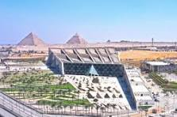
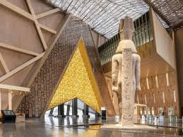
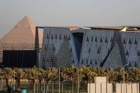
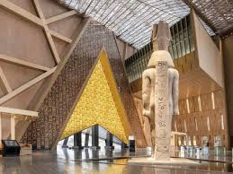
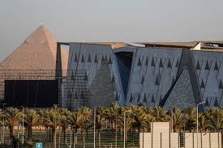

المتحف المصري الكبير
المتحف المصري الكبير (GEM) هو أحد أكبر المتاحف الأثرية في العالم، يقع على هضبة الجيزة بالقاهرة، على مسافة تقل عن كيلومترين من أهرامات الجيزة. تم تصميمه ليكون أول متحف مخصص لحضارة واحدة في العالم، وهو مشروع قومي مصري ضخم يهدف إلى عرض تاريخ مصر القديم بشكل متكامل.
يضم المتحف أكثر من 100 ألف قطعة أثرية نادرة، ويُعتبر أول متحف يعرض كنوز الملك توت عنخ آمون بالكامل لأول مرة في التاريخ، بما في ذلك قناعه الذهبي الشهير. كما يضم ممر المومياوات الملكية الذي يعرض 22 مومياء ملكية في حالة حفظ ممتازة.
العنوان: طريق الأهرامات، الجيزة، مصر (بجوار الأهرامات)
ساعات العمل: يوميًا من 9 صباحًا إلى 6 مساءً
تذكرة الدخول: للسائحين حوالي 300 جنيه مصري (تختلف حسب المنطقة)
 


